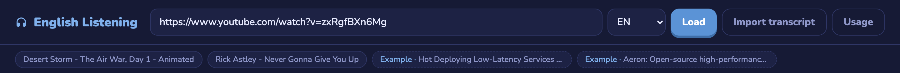
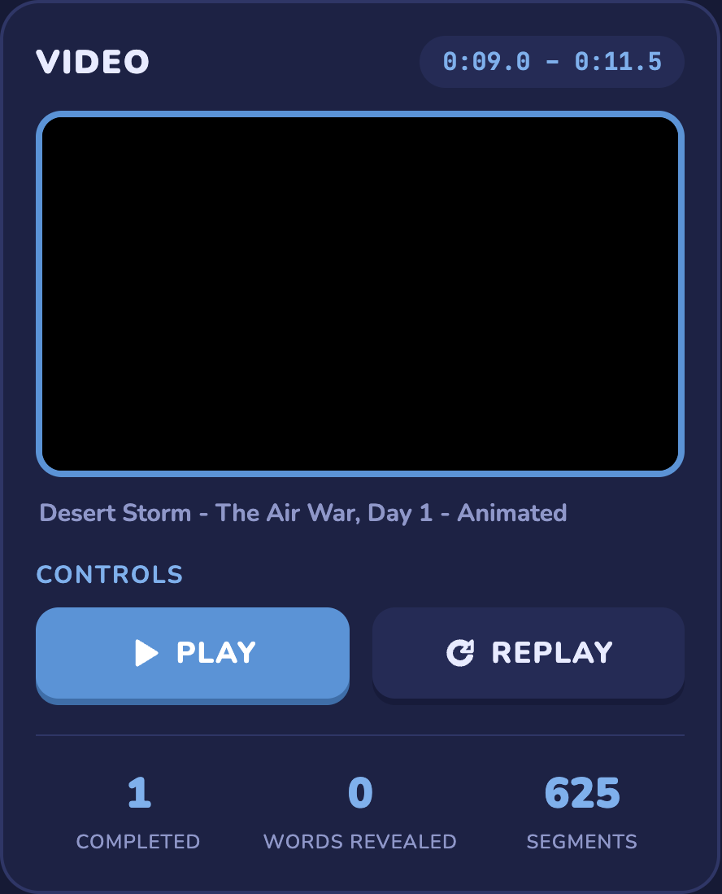
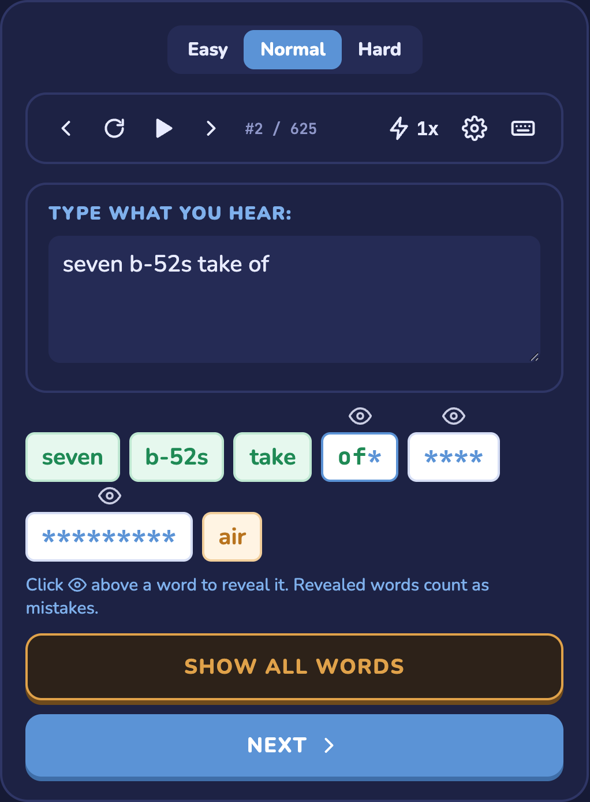
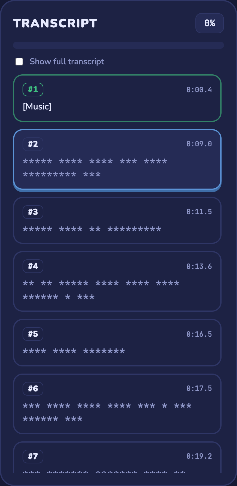
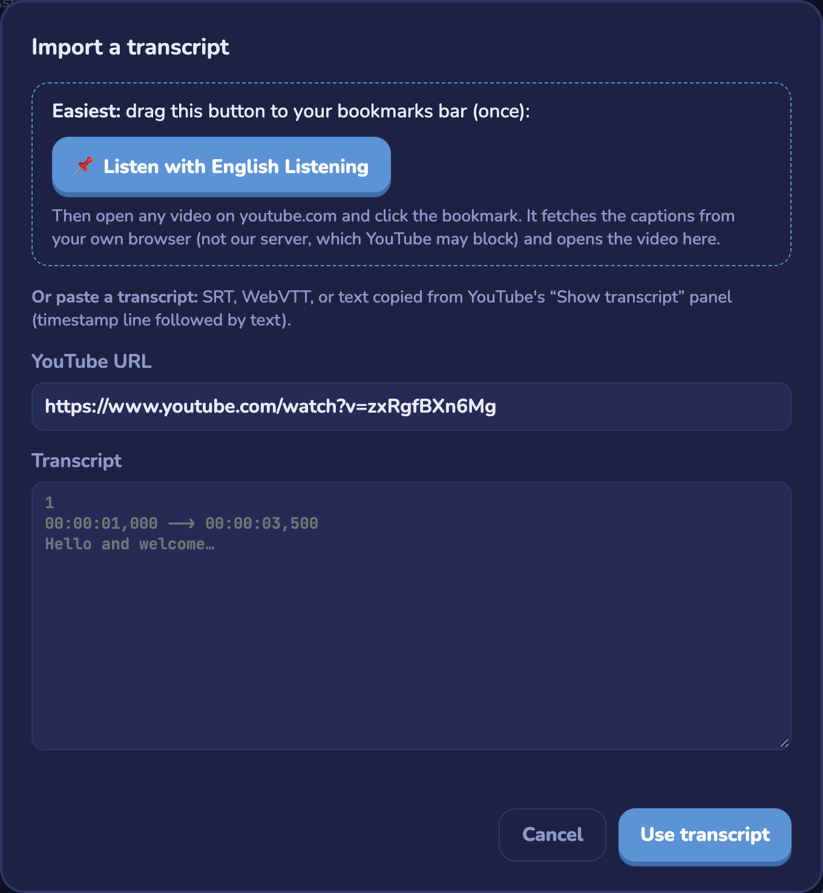
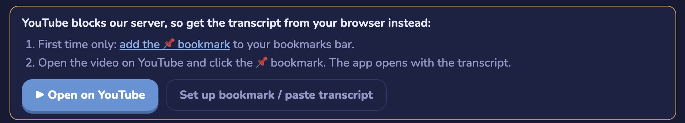
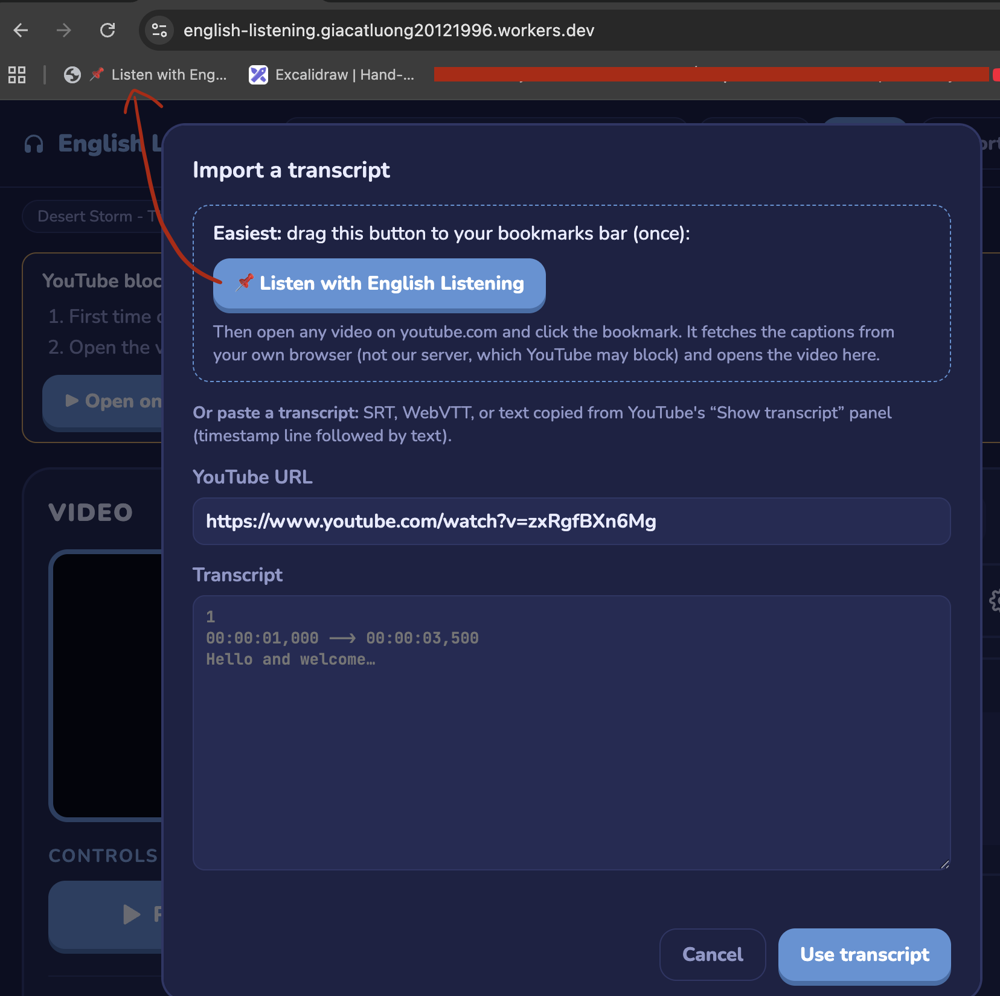
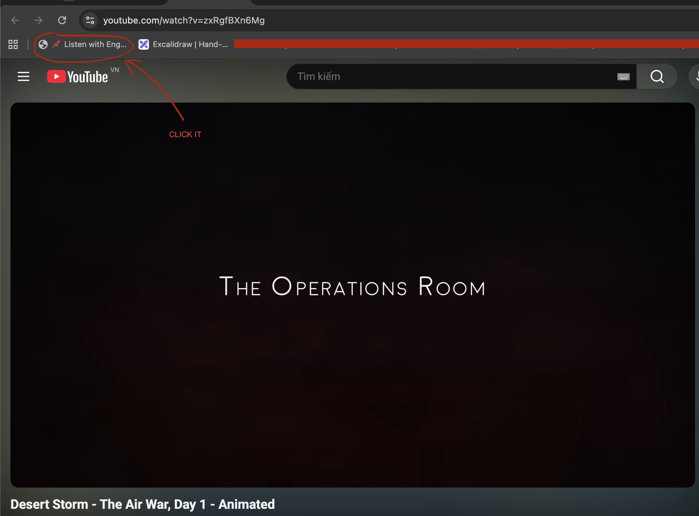
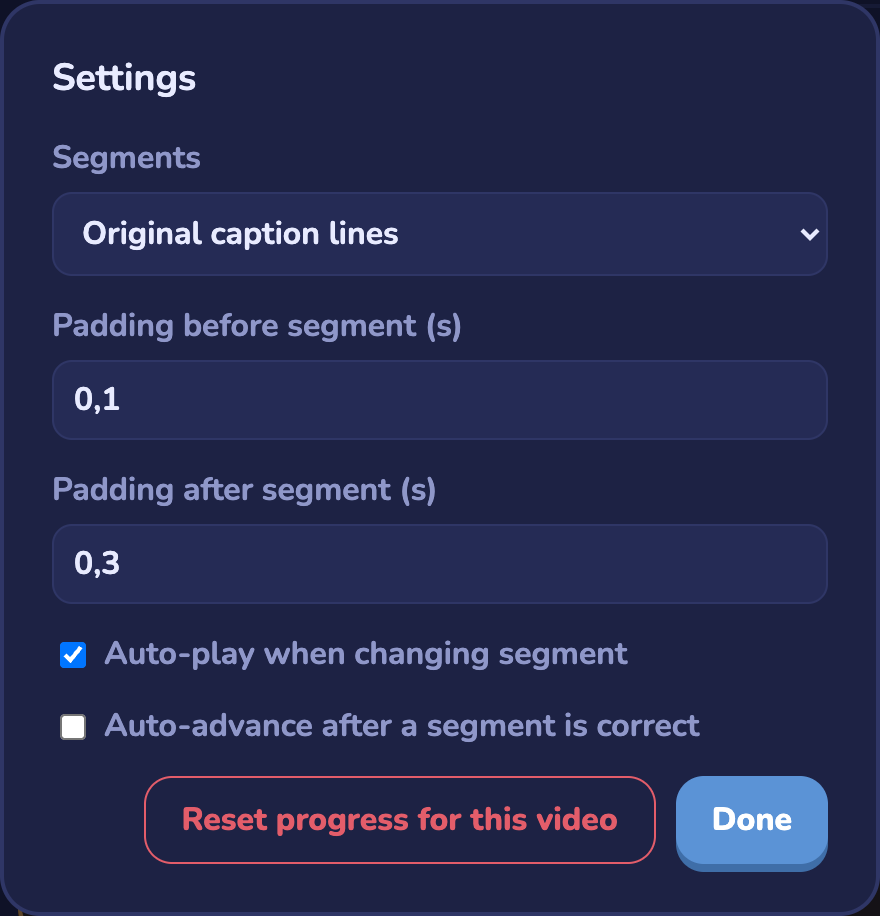

Usage
Examples
Open this video to try the app:
1. Load a video

- Paste a YouTube URL, pick the caption language (EN, EN-US, EN-GB) and click Load.
- Usage opens this guide.
- Videos you opened recently show up as chips under the bar, followed by Example videos to try. Click one to load it.
2. Video

- The pill at the top shows the time range of the current segment.
- Play plays the current segment, which stops by itself at the end. Replay plays it again from the start.
- The stats show how many segments you completed, how many words you revealed and the total number of segments.
3. Dictation

- Easy / Normal / Hard sets how much of each hidden word you see. Hard doesn't show how long the words are.
- Toolbar: previous segment, replay, play / pause, next segment, the segment counter, playback speed (0.5x → 1.25x), settings and keyboard shortcuts.
- Type what you hear in Type what you hear. The word boxes check your answer as you type:
- green: correct word
- letters you typed right stay visible, wrong or missing letters show as
* - orange: a word you revealed
- Click 👁 above a word to reveal it. Revealed words count as mistakes.
- Show all words reveals the whole segment. Next moves on to the next segment.
4. Transcript

- The progress bar and percentage show how much of the video you finished.
- Each card is one segment. Click a card to jump to it. Completed segments are green and the current one is blue.
- Text you haven't solved is hidden. Tick Show full transcript to see everything.
5. Import a transcript

- Drag 📌 Listen with English Listening to your bookmarks bar, then click it on any youtube.com video page. Use this when YouTube blocks the server (see IP got blocked?).
- Or paste the YouTube URL and an SRT, WebVTT or YouTube "Show transcript" text, then click Use transcript.
IP got blocked?
YouTube sometimes blocks caption requests from our server. When a video won't load, you see this message:

The fix is to load the captions from your own browser with a bookmark:
-
First time only: drag the orange 📌 English Listening button in the top bar onto your browser's bookmarks bar (click 💡 Tutorial for a walkthrough).

-
Click ▶ Open on YouTube (or open any video on youtube.com), then click the 📌 Listen with Eng… bookmark. The app opens with that video and its transcript.

Imported transcripts are saved in your browser, so the video keeps working next time without the bookmark.
Settings

- Segments: practise the original caption lines, or merge them into whole sentences.
- Padding before / after segment: extra seconds played before and after each segment.
- Auto-play when changing segment / Auto-advance after a segment is correct.
- Reset progress for this video clears your progress for the current video.
Settings and progress are saved in your browser (localStorage).
Keyboard shortcuts
| Enter | Next segment when correct, otherwise replay |
| Ctrl + Enter | Replay segment |
| Ctrl + → / Ctrl + ← | Next / previous segment |
| Ctrl + ↑ | Reveal the next word |
| Ctrl + ↓ | Cycle playback speed |